Rambleon Birdsong came into this stretch of the record already a hunter of some small seasoning, level eight, and left it level twenty-six — nineteen nights of play, from the twenty-first of September to the tenth of October, carried across Teldrassil and Darnassus, Darkshore and Ashenvale, the Barrens and Stonetalon, Stormwind and Ironforge, Westfall and the Deadmines, the Wetlands and Hillsbrad, and back again more than once to the moonlit paths he already knew. What follows is that road, stretch by stretch, as he actually walked it.
1TeldrassilLevel 8–9
He began the night's work in Dolanaar, settling Zenn's Bidding and picking up the threads that would occupy him through dusk — Seek Redemption!, word of Gnarlpine corruption, and errands concerning timberling sprouts and seeds. At Starbreeze Village he closed out A Troubling Breeze, and down at Lake Al'Ameth he delivered Denalan's Earth and the timberling business both. The lake gave him his first true solitude of the record — nightsabers, a webwood lurker, gnarlpine of several kinds, timberlings and lasher sproutlings, and the furbolg called Xethorr the Wicked all crossed his path there. He had Hazardelf and Tiamaat beside him at points, yet wrote afterward of being "alone at the lake slayin timberlings" — a small, honest loneliness even in company. He left the lake level nine, having turned in Seek Redemption!, Gnarlpine Corruption, Twisted Hatred, and a furbolg bounty besides.
- Picked up
- Seek Redemption!, Gnarlpine Corruption, Timberling Sprouts, Timberling Seeds, Rellian Greenspyre, The Relics of Wakening
- Turned in
- Zenn's Bidding (level 8), A Troubling Breeze (Starbreeze Village, level 8), Denalan's Earth (Lake Al'Ameth, level 8), Timberling Sprouts (Lake Al'Ameth, level 8), Timberling Seeds (Lake Al'Ameth, level 8), Seek Redemption! (level 9), Gnarlpine Corruption (Dolanaar, level 9), Twisted Hatred (Dolanaar, level 9), Bounty: Gnarlpine Furbolg (level 9)
- Reached
- level 9 (Lake Al'Ameth)
- First met in combat
- Nightsaber, Webwood Lurker, Gnarlpine Gardener, Gnarlpine Warrior, Gnarlpine Ursa, Timberling, Lasher Sproutling, Befouled Webwood, Xethorr the Wicked
- Company
- Hazardelf, Tiamaat
- “alone at the lake slayin timberlings” (Chapter 1)
2DarnassusLevel 9
A quieter errand carried him into the capital. He walked the Warrior's Terrace, the Cenarion Enclave, the Temple of the Moon, and the Craftsmen's Terrace, passing back through Teldrassil to get there, and in the Enclave he handed over Rellian Greenspyre. Along the way he picked up word of Tumors needing attention. Tiamaat walked with him. It was a short visit, more passage than purpose, but Darnassus had already begun to work on him.
- Picked up
- Tumors
- Turned in
- Rellian Greenspyre (Cenarion Enclave, level 9)
- Company
- Tiamaat
3TeldrassilLevel 9–11
Back on the island, the quests thickened. At the Oracle Glade he closed The Lost Runner and found The Enchanted Glade waiting, while new tasks piled up — Not Dead Yet, Darkness in the Glade, three separate chances at Taming the Beast, The Great Tree Provides, The Shimmering Frond, a recipe of the Kaldorei, and the training of a beast of his own. Dolanaar and Lake Al'Ameth both saw him turning in steadily, and he crossed paths with strigid hunters, elder nightsabers, timberling tramplers and mire beasts, bloodfeather rogues and their harpy kin, and a creature called Lady Sathrah. The road was not without cost — he died three times, at Wellspring River and the Oracle Glade both — but Bird kept him company through it, and he rose twice, to level ten at Wellspring River and level eleven in Dolanaar, where a picture caught the moment.

- Picked up
- Not Dead Yet, The Enchanted Glade, Darkness in the Glade, Taming the Beast ×3, The Great Tree Provides, The Shimmering Frond, Recipe of the Kaldorei, Training the Beast
- Turned in
- The Lost Runner (The Oracle Glade, level 9), The Enchanted Glade (The Oracle Glade, level 10), Not Dead Yet (Dolanaar, level 10), Taming the Beast ×3 (Dolanaar, level 10), Camping 101: Cooking (Dolanaar, level 10), Recipe of the Kaldorei (Dolanaar, level 10), The Shimmering Frond (Lake Al'Ameth, level 10), The Sprouted Fronds (Lake Al'Ameth, level 10)
- Reached
- level 10 (Wellspring River), level 11 (Dolanaar)
- First met in combat
- Strigid Hunter, Elder Nightsaber, Timberling Trampler, Timberling Mire Beast, Bloodfeather Rogue, Bloodfeather Sorceress, Bloodfeather Harpy, Webwood Silkspinner, Blooming Lasher, Elder Timberling, Lady Sathrah, Feral Nightsaber
- Deaths
- 3 (Wellspring River, The Oracle Glade)
- Company
- Bird
4DarnassusLevel 11
A brief return to the city, barely a quarter hour, but enough to settle real business. He turned in Tumors in the Cenarion Enclave, closed out his beast training, and delivered the Tears of the Moon at the Temple itself, picking up Nessa Shadowsong's charge, word of a return to Denalan, and Sathrah's Sacrifice to carry back out. Pictures marked his entrance to the city and a moment in the Enclave. He wrote of the place with real feeling that night: "i really like darnassus... very calm. never overcrowded" — the kind of quiet a hunter learns to prize.

- Picked up
- Nessa Shadowsong, Return to Denalan, Sathrah's Sacrifice
- Turned in
- Tumors (Cenarion Enclave, level 11), Training the Beast (level 11), Tears of the Moon (Temple of the Moon, level 11)
- “i really like darnassus... very calm. never overcrowded” (Chapter 3)
5TeldrassilLevel 11–13
This was the long stretch, nearly six hours across familiar and new ground alike — Dolanaar, Starbreeze, Shadowglen and Aldrassil, Shadowthread Cave, Lake Al'Ameth, the Ban'ethil hollow and barrow den, the Pools of Arlithrien, Gnarlpine Hold, Wellspring Lake, the Oracle Glade. He closed the webwood egg business and the Fang of Githyiss at Aldrassil, answered Tenaron's Summons, and ran down four Crowns of the Earth in Dolanaar. Oakenscowl and the sleeping druid's trouble occupied the barrow den, where he fell once before rising to level twelve. Ferocitas the Dream Eater, Ursal the Mauler, and a rageclaw all crossed his bow before the Oracle Glade carried him to thirteen, his Oracle Tree and Easing Suffering errands closed there. Cassidy, Aurel, Vamshi, Titania, Kaeds, Dread, Abbey, Lepoof, and Highlord all shared the road with him at different turns. He called it a night plainly: "turning in a couple quests then turning in for the night."

- Picked up
- Fang of Githyiss, Tenaron's Summons, Crown of the Earth ×5, Oakenscowl, Easing Suffering, The Sleeping Druid, Druid of the Claw, Ursal the Mauler, Ferocitas the Dream Eater, The Glowing Fruit, The Oracle Tree, Teldrassil
- Turned in
- Webwood Egg (Aldrassil, level 11), Fang of Githyiss (Aldrassil, level 11), Tenaron's Summons (Aldrassil, level 11), Crown of the Earth ×4 (Dolanaar, level 12), Return to Denalan (Lake Al'Ameth, level 11), Oakenscowl (Lake Al'Ameth, level 11), The Great Tree Provides (Dolanaar, level 11), The Sleeping Druid (Ban'ethil Barrow Den, level 12), Druid of the Claw (Ban'ethil Barrow Den, level 12), The Relics of Wakening (Dolanaar, level 12), The Emerald Dreamcatcher (Dolanaar, level 12), Ferocitas the Dream Eater (Dolanaar, level 12), The Glowing Fruit (Lake Al'Ameth, level 12), Ursal the Mauler (Dolanaar, level 12), Darkness in the Glade (The Oracle Glade, level 12), The Oracle Tree (The Oracle Glade, level 13), Easing Suffering (The Oracle Glade, level 13)
- Reached
- level 12 (Ban'ethil Barrow Den), level 13 (The Oracle Glade)
- First met in combat
- Webwood Venomfang, Timberling Trampler, Oakenscowl, Timberling Bark Ripper, Lasher Sproutling, Nightsaber Stalker, Gnarlpine Shaman, Gnarlpine Defender, Gnarlpine Augur, Rageclaw, Ferocitas the Dream Eater, Gnarlpine Mystic
- Deaths
- 1 (Ban'ethil Barrow Den)
- Company
- Cassidy, Aurel, Vamshi, Titania, Kaeds, Dread, Abbey, Lepoof, Highlord
- “turning in a couple quests then turning in for the night” (Chapter 4)
6DarnassusLevel 13
Ten quiet minutes in the city — the Warrior's Terrace, Craftsmen's Terrace, and Cenarion Enclave — long enough to pick up word of the Grove of the Ancients and to turn in Teldrassil itself at the Enclave. A picture marked his entrance. Small business, but it pointed him toward the coast.

- Picked up
- Grove of the Ancients
- Turned in
- Teldrassil (Cenarion Enclave, level 13)
7TeldrassilLevel 13
A single minute at Rut'theran Village and the Veiled Sea beyond it, just long enough to settle Nessa Shadowsong's errand and The Bounty of Teldrassil, and to take up the flight to Auberdine. The island's work, for now, was done.
- Picked up
- The Bounty of Teldrassil, Flight to Auberdine
- Turned in
- Nessa Shadowsong (Rut'theran Village, level 13), The Bounty of Teldrassil (Rut'theran Village, level 13)
8DarkshoreLevel 13–15
Eight hours on the shore, and the record fills with it — Mist's Edge, Auberdine, the Long Wash, Twilight Shore and Vale, Wildbend River, the Grove of the Ancients, the Master's Glaive, Remtravel's Excavation, Bashal'Aran, Ameth'Aran, the Cliffspring, and the Tower of Althalaxx and Ruins of Mathystra besides. He was washed ashore in more ways than one, chasing a bounty on Jai'vhanel, mushrooms, a red crystal, buzzboxes by the dozen, a beached turtle and sea creature, the fall of Ameth'Aran, and a murloc called Murkdeep. Greymist raiders and coastrunners, moonstalkers and thistle bears, Blackwood windtalkers and pathfinders, threshers in the surf — all of it cost him, ten deaths scattered from Twilight Vale to the Tower itself. Strafhe, Banne, and Cassidy shared stretches of it with him. He rose to fourteen on the shore and to fifteen at Ameth'Aran, each marked with a picture, and closed a long list of turn-ins at Auberdine before the night allowed him to stop.

- Picked up
- Washed Ashore ×2, Return to Nessa, WANTED: Jai'vhanel, Cave Mushrooms, The Red Crystal, Buzzbox 827, For Love Eternal, The Family and the Fishing Pole, Beached Sea Turtle, Buzzbox 411, Plagued Lands, How Big a Threat? ×2, The Tower of Althalaxx ×3, Deep Ocean, Vast Sea, Bashal'Aran ×4, Tools of the Highborne, Expanding Horizons, Thundris Windweaver, The Cliffspring River, Beached Sea Creature, Buzzbox 323, As Water Cascades, The Fall of Ameth'Aran, WANTED: Murkdeep!, Fruit of the Sea, The Absent Minded Prospector, The Blackwood Corrupted
- Turned in
- Flight to Auberdine (Auberdine, level 13), Washed Ashore ×2 (Auberdine, level 13), Grove of the Ancients (Grove of the Ancients, level 13), Buzzbox 827 (Auberdine, level 13), Beached Sea Turtle (Auberdine, level 13), How Big a Threat? (Auberdine, level 13), Thundris Windweaver (Auberdine, level 13), Buzzbox 411 (Mist's Edge, level 14), Deep Ocean, Vast Sea (Auberdine, level 14), Beached Sea Creature (Auberdine, level 14), Bashal'Aran ×3 (Bashal'Aran, level 14), The Red Crystal (Auberdine, level 14), The Fall of Ameth'Aran (Twilight Vale, level 15), Tools of the Highborne (Auberdine, level 15), The Tower of Althalaxx ×2 (level 15), The Cliffspring River (Auberdine, level 15)
- Reached
- level 14 (Darkshore), level 15 (Ameth'Aran)
- First met in combat
- Greymist Raider, Greymist Coastrunner, Pygmy Tide Crawler, Young Reef Crawler, Greymist Seer, Moonstalker, Rabid Thistle Bear, Grizzled Thistle Bear, Blackwood Windtalker, Blackwood Pathfinder, Darkshore Thresher, Moonstalker Runt
- Deaths
- 10 (Twilight Vale, Remtravel's Excavation, Mist's Edge, Bashal'Aran, Tower of Althalaxx)
- Company
- Strafhe, Banne, Cassidy
9TeldrassilLevel 15
A short crossing back through Darnassus to the Veiled Sea and Rut'theran Village, long enough to close out his return to Nessa. Pictures caught his passage through both island and city — a brief breath before the coast called him back.

- Turned in
- Return to Nessa (Rut'theran Village, level 15)
10DarkshoreLevel 15–17
Nearly eight more hours on the same shore, and the work only deepened — plague and infection, a buzzbox, Tharnariun's Hope, a trek being prepared toward Ashenvale, two lost masters, an escape through force. Tide crawlers, greymist of every stripe, a creature called Murkdeep, moonstalkers, Blackwood warriors, and rabid thistle bears all tested him across Twilight Shore and the Blackwood Den, where six deaths found him. Caerwyn, Reighna, Elentria, Softtaco, Menos, Cassidy, and Noseeum kept him company through it. He climbed to sixteen at Bashal'Aran and to seventeen at Twilight Vale, both moments held in pictures, the coastline at last beginning to feel finished.

- Picked up
- Beached Sea Creature ×2, Beached Sea Turtle ×2, Plagued Lands, Cleansing of the Infected, Buzzbox 525, Tharnariun's Hope, Trek to Ashenvale, A Lost Master ×2, Escape Through Force
- Turned in
- Beached Sea Creature ×2 (Auberdine, level 15), Beached Sea Turtle ×2 (Auberdine, level 16), WANTED: Murkdeep! (Auberdine, level 15), The Blackwood Corrupted (Auberdine, level 16), Plagued Lands (Auberdine, level 16), Buzzbox 323 (Cliffspring River, level 16), Fruit of the Sea (Auberdine, level 16), Cleansing of the Infected (Auberdine, level 16), Tharnariun's Hope (Auberdine, level 16), How Big a Threat? (Auberdine, level 16), Buzzbox 525 (Twilight Vale, level 17), For Love Eternal (Auberdine, level 17), WANTED: Jai'vhanel (Auberdine, level 17), A Lost Master ×2 (Blackwood Den, level 17), Bashal'Aran (Bashal'Aran, level 17)
- Reached
- level 16 (Bashal'Aran), level 17 (Twilight Vale)
- First met in combat
- Tide Crawler, Greymist Seer, Greymist Netter, Reef Crawler, Greymist Warrior, Murkdeep, Greymist Hunter, Greymist Tidehunter, Moonstalker Runt, Moonstalker, Blackwood Warrior, Rabid Thistle Bear
- Deaths
- 6 (Twilight Shore, Blackwood Den)
- Company
- Caerwyn, Reighna, Elentria, Softtaco, Menos, Cassidy, Noseeum
11AshenvaleLevel 17
Barely nine minutes carried him into new country — Maestra's Post and Astranaar — where he closed the Tower of Althalaxx business and the long trek from Darkshore, picking up word of the Zoram Strand and trouble brewing in Stonetalon. Cassidy was there for the crossing, and a picture marked his first steps into the forest.

- Picked up
- The Tower of Althalaxx, The Zoram Strand, On Guard in Stonetalon
- Turned in
- The Tower of Althalaxx (Maestra's Post, level 17), Trek to Ashenvale (Astranaar, level 17)
- Company
- Cassidy
12DarkshoreLevel 17
A return south, over two and a half hours through Twilight Vale and Shore, the Long Wash, Auberdine, Bashal'Aran, the Cliffspring and its falls, Ameth'Aran, Wildbend River, the Master's Glaive, and Remtravel's dig. Moonstalkers in several guises, a den mother, and twilight cultists met him there, and he died once at the Glaive. Tina, Cassidy, and Papa walked it with him, and he picked up Therylune's Escape to carry forward.

- Picked up
- Therylune's Escape
- First met in combat
- Moonstalker, Blackwood Warrior, Den Mother, Twilight Disciple, Twilight Thug, Moonstalker Matriarch, Moonstalker Runt, Moonstalker Sire
- Deaths
- 1 (The Master's Glaive)
- Company
- Tina, Cassidy, Papa
13AshenvaleLevel 17–18
An hour and a quarter among ruins and shrines — the Ordil'Aran stones, the Shrine of Aessina, Fire Scar — where dark strand cultists, a voidwalker's minion, felslayers, a lesser felguard, and the warlock Ilkrud Magthrull made for a hard stretch, five deaths among them. Papa and Karis stood with him through it. He closed the Tower of Althalaxx again at Maestra's Post and rose to eighteen at the Shrine, the moment caught in a picture.

- Picked up
- The Tower of Althalaxx
- Turned in
- The Tower of Althalaxx (Maestra's Post, level 17)
- Reached
- level 18 (The Shrine of Aessina)
- First met in combat
- Dark Strand Cultist, Voidwalker Minion, Dark Strand Adept, Wildthorn Stalker, Ghostpaw Runner, Felslayer, Lesser Felguard, Ilkrud Magthrull
- Deaths
- 5 (Ashenvale, The Shrine of Aessina, Fire Scar Shrine)
- Company
- Papa, Karis
14DarkshoreLevel 18
An hour's quiet return through Auberdine, the Long Wash, and Twilight Shore, with Cassidy and Karis for company and no new business to record — a breather between harder ground.
- Company
- Cassidy, Karis
15AshenvaleLevel 18
Two hours ranging wide — the Zoram Strand, Lake Falathim, the Shrine of Aessina, Astranaar, Maestra's Post, Iris Lake, a moonwell, with glimpses of Darkshore, Teldrassil, and Darnassus along the way. He picked up the journey to Stonetalon Peak, four chances at Raene's Cleansing, and word of pridewings and an aggressive defense to come, closing three Cleansings at the moonwell and the Zoram Strand's business at Astranaar. Ghostpaw runners, saltspittle muckdwellers, wrathtail raiders, and an ashenvale bear cost him three deaths, at Lake Falathim and in the forest proper. Pictures marked his passages through three different lands in one stretch.

- Picked up
- Journey to Stonetalon Peak, Raene's Cleansing ×4, Culling the Threat, The Tower of Althalaxx, Pridewings of Stonetalon, An Aggressive Defense, Unrequited Love, Researching the Corruption, In Search of Thaelrid
- Turned in
- The Tower of Althalaxx (Maestra's Post, level 18), Raene's Cleansing ×3 (Moonwell, level 18), The Zoram Strand (Astranaar, level 18)
- First met in combat
- Ghostpaw Runner, Saltspittle Muckdweller, Wrathtail Wave Rider, Wrathtail Sorceress, Wrathtail Razortail, Wildthorn Stalker, Ashenvale Bear, Saltspittle Puddlejumper, Saltspittle Warrior
- Deaths
- 3 (Lake Falathim, Ashenvale)
16DarkshoreLevel 18
A brief half hour back across the coast, with glimpses of Ashenvale and the Barrens at its edges, Chud beside him and a single moonstalker sire the only resistance recorded. He named the road ahead plainly: "a long walk on the long wash is in order" — and a picture marked his first steps into the Barrens.

- First met in combat
- Moonstalker Sire
- Company
- Chud
- “a long walk on the long wash is in order” (Chapter 7)
17The BarrensLevel 18
Only nineteen minutes, but new ground entirely — the Mor'shan Rampart, the Gold Road, the Crossroads, Thorn Hill, Honor's Stand. Hecklefang hyenas and an ornery plainstrider were his first welcome to the savannah, and it cost him one death before Stonetalon called him onward.
- First met in combat
- Hecklefang Hyena, Ornery Plainstrider
- Deaths
- 1 (The Barrens)
18Stonetalon MountainsLevel 18–19
An hour and a half through Greatwood Vale, Camp Aparaje, Webwinder Path, Windshear Crag, the Blackwolf River, and the twin lakes beneath Stonetalon Peak. He closed the Stonetalon guard duty twice over and a gnome's small respite at Webwinder Path, and reached the peak itself to settle his journey there. Deepmoss venomspitters, Venture Co. loggers and deforesters, pridewing wyverns and consorts, a blackened basilisk, and a sap beast filled the hours. Kancho and Cassidy shared the climb. He rose to nineteen at the Blackwolf River, and of the wyverns overhead he wrote a hunter's plain wisdom: "patience is key with pridewings."

- Picked up
- On Guard in Stonetalon, A Gnome's Respite, Super Reaper 6000, An Old Colleague, A Scroll from Mauren
- Turned in
- On Guard in Stonetalon ×2 (Webwinder Path, level 18), A Gnome's Respite (Webwinder Path, level 19), Journey to Stonetalon Peak (Stonetalon Peak, level 19)
- Reached
- level 19 (Blackwolf River)
- First met in combat
- Deepmoss Venomspitter, Venture Co. Deforester, Venture Co. Logger, Pridewing Wyvern, Pridewing Consort, Blackened Basilisk, Sap Beast
- Company
- Kancho, Cassidy
- “patience is key with pridewings” (Chapter 8)
19AshenvaleLevel 19
Six minutes only, back through the Veiled Sea, the Zoram Strand, and Lake Falathim to Maestra's Post and Astranaar, long enough to deliver word of the pridewings at last. A picture marked the crossing.

- Turned in
- Pridewings of Stonetalon (Astranaar, level 19)
20DarkshoreLevel 19
Twenty-eight minutes through Twilight Vale and Shore, the Long Wash, Auberdine, and Remtravel's dig, with Ashenvale glimpsed at the edge. Cracked golems, gravelflint scouts, a stone behemoth, and a gravelflint geomancer were new faces in old country. Raín and Is walked it with him.

- First met in combat
- Cracked Golem, Gravelflint Scout, Stone Behemoth, Gravelflint Geomancer
- Company
- Raín, Is
21Blackfathom DeepsLevel 19
Thirty-four minutes in the drowned dark beneath the sea, reached by way of Darkshore, Ashenvale, and Teldrassil. Murkshallow snapclaws, a skittering crustacean, and blindlight murlocs met him in the Sacellum, and the depths claimed him twice. He came away with knowledge of the place, if little else, and pictures marked both his descent and his return to the island above.

- Picked up
- Knowledge in the Deeps
- First met in combat
- Murkshallow Snapclaw, Skittering Crustacean, Blindlight Murloc
- Deaths
- 2 (The Drowned Sacellum, Blackfathom Deeps)
- Instances
- Blackfathom Deeps
22Stormwind CityLevel 19
Twenty-two minutes through the Harbor, the Canals, Cathedral Square, the Trade and Mage Quarters, and the Valley of Heroes, reached by way of Elwynn Forest. He closed out Expanding Horizons at the Cathedral and a scroll's business in the Mage Quarter, while new errands gathered around him — stew, beginnings, devils in Westfall, retrieval, a task for Elmore, and a gold dust exchange. Pictures marked his first sight of the city, a moment in the square, and his step back into the forest.

- Picked up
- Making Do, Humble Beginnings, Devils in Westfall, Retrieval for Mauren, Elmore's Task, Gold Dust Exchange
- Turned in
- Expanding Horizons (Cathedral Square, level 19), A Scroll from Mauren (Mage Quarter, level 19)
23WestfallLevel 19
Thirty-nine minutes among the farmsteads — the Jansen Stead, Saldean's Farm, Sentinel Hill, Stendel's Pond — with Sentinel Tower glimpsed nearby. He closed the stew at Saldean's and picked up a thick sheaf of Westfall's troubles: a lost heirloom, killing fields, harvesters, the Defias, the militia, patrol duty, and bandannas still to be found. Harvest watchers, dust devils, goretusks, and Riverpaw raiders cost him a single death. Pictures marked his entrance to the farmland and the tower both.

- Picked up
- Westfall Stew, Poor Old Blanchy, The Forgotten Heirloom, The Killing Fields, Harvesting the Harvesters, The Defias Brotherhood, The People's Militia, Patrolling Westfall, Red Leather Bandanas
- Turned in
- Westfall Stew (Saldean's Farm, level 19)
- First met in combat
- Harvest Watcher, Dust Devil, Goretusk, Riverpaw Brute, Riverpaw Bandit
- Deaths
- 1 (Westfall)
24Sentinel TowerLevel 19
Two minutes only, passing through Westfall, Duskwood, and Elwynn Forest, enough to report his patrol complete. A picture marked his first look at Duskwood's edge.

- Turned in
- Patrolling Westfall (level 19)
25Stormwind CityLevel 19
Twenty-three minutes crossing the city proper — the Valley of Heroes, Trade District, Canals, Mage Quarter, the Park, Dwarven District, Stormwind Keep with its library and gallery and petitioner's chamber, Cathedral Square — reached by the Deeprun Tram. He closed the Westfall devils and Elmore's task, finished his reading room errand, and settled accounts at the Park, while new business piled up: a delivery for Gaxim, Stormpike's goods, an underground assault, memories to collect, a brother's trouble, shelves to pick. A picture marked his first ride on the tram.

- Picked up
- Special Delivery for Gaxim, Reading Room, Stormpike's Delivery, Underground Assault, Collecting Memories, Oh Brother..., Shelf Picked
- Turned in
- Devils in Westfall (Mage Quarter, level 19), Elmore's Task (Dwarven District, level 19), Reading Room (Royal Library, level 19), Shelf Picked (The Park, level 19)
26DarkshoreLevel 19–20
An hour and twenty minutes winding back through Auberdine, the Long Wash, Twilight Shore and Vale, Wildbend River, Remtravel's dig, the Master's Glaive, the Blackwood Den, Mist's Edge, and the Veiled Sea, with Ashenvale and Teldrassil at the edges. He closed Making Do at Auberdine and the escape through force that followed, rising to twenty at the Glaive. Grizzled thistle bears, a giant foreststrider, moonstalker sires, and Blackwood warriors and their shaman cost him one death at Twilight Vale. Val, Cassidy, Andria, Fanaandel, Koiya, and Artemisa shared the road, and pictures marked his entrance to Darkshore, his new level, his passage through Teldrassil, and a quiet moment on the Veiled Sea.

- Picked up
- Escape Through Force, The Powers Below, Therylune's Escape
- Turned in
- Making Do (Auberdine, level 19), Escape Through Force (Auberdine, level 20)
- Reached
- level 20 (The Master's Glaive)
- First met in combat
- Grizzled Thistle Bear, Giant Foreststrider, Moonstalker Sire, Blackwood Warrior, Blackwood Ursa, Blackwood Shaman, Twilight Disciple, Twilight Thug
- Deaths
- 1 (Twilight Vale)
- Company
- Val, Cassidy, Andria, Fanaandel, Koiya, Artemisa
27Stormwind CityLevel 20
Nine minutes through the Harbor, Canals, Cathedral Square and Light, the Keep, Library, and Dwarven District, by way of the tram. He closed Speaking of Fortitude at the Library and picked up a new word about Brother Paxton. Pictures marked his entrance to the city and the tram both.

- Picked up
- Speaking of Fortitude, Brother Paxton
- Turned in
- Speaking of Fortitude (Royal Library, level 20)
28Deeprun TramLevel 20
A single minute underground, marked by nothing but the novelty of it: "1st train ride," he wrote — small words for a moment he still thought worth a picture.

- “1st train ride” (Chapter 9)
29IronforgeLevel 20
Eight minutes through Tinker Town, the Military Ward, the Great Forge, the Hall of Explorers, the Forlorn Cavern, and the Mystic Ward. He closed An Old Colleague in Tinker Town and the Powers Below in the Cavern, while new errands waited — a techbot's brain, a search for Bingles, chemicals best left to tinkers. A picture marked his first entrance to the mountain city.

- Picked up
- Save Techbot's Brain!, Find Bingles, The Day After, Ineptitude + Chemicals = Fun
- Turned in
- An Old Colleague (Tinker Town, level 20), The Powers Below (The Forlorn Cavern, level 20)
30AshenvaleLevel 20
Fifty-four minutes through Astranaar, the Shrine of Aessina, Greenpaw Village, Lake Falathim, the Zoram Strand, and the Veiled Sea. He closed Therylune's Escape at the Shrine and an aggressive defense at Astranaar. Ghostpaw runners and wildthorn stalkers were familiar by now, but the foulweald furbolg — totemics, pathfinders, warriors, den watchers, a shaman among them — were new and costly, one death among the trees. Rip, Ialach, Alourah, and Sertuvius shared the stretch, and a picture marked his return to the forest.

- Turned in
- Therylune's Escape (The Shrine of Aessina, level 20), An Aggressive Defense (Astranaar, level 20)
- First met in combat
- Ghostpaw Runner, Wildthorn Stalker, Foulweald Totemic, Foulweald Pathfinder, Foulweald Warrior, Foulweald Den Watcher, Foulweald Ursa, Foulweald Shaman
- Deaths
- 1 (Ashenvale)
- Company
- Rip, Ialach, Alourah, Sertuvius
31Stonetalon MountainsLevel 20
Over two hours back among the peaks and the Charred Vale, by way of Ashenvale, Darkshore, Stormwind, and Elwynn. He closed a delivery for Gaxim at Webwinder Path and took up the reclaiming of the Charred Vale itself. Sap beasts and antlered coursers were old news, but bloodfury ambushers and harpies, rogue flame spirits, windcallers, charred ancients, and singed basilisks were not kind — seven deaths scattered through the vale and the mountains both. Cassidy, Arktalis, and Falsila stood with him through it, and pictures marked his passage through four lands in a single stretch.

- Picked up
- Reclaiming the Charred Vale
- Turned in
- Special Delivery for Gaxim (Webwinder Path, level 20)
- First met in combat
- Sap Beast, Antlered Courser, Blackened Basilisk, Bloodfury Ambusher, Bloodfury Harpy, Rogue Flame Spirit, Bloodfury Windcaller, Charred Ancient, Singed Basilisk
- Deaths
- 7 (The Charred Vale, Stonetalon Mountains, Mirkfallon Lake)
- Company
- Cassidy, Arktalis, Falsila
32WestfallLevel 20
Nearly two hours back among the farms — Saldean's, Sentinel Hill, the Dust Plains, Moonbrook, Demont's Place, the Dagger Hills, Longshore — with the Deadmines glimpsed ahead. He picked up word of a dwarf called Thunderbrew. Riverpaw taskmasters and a growing cast of Defias — pillagers, messengers, looters, knuckledusters, pathstalkers, highwaymen — made clear the coast was turning to open conflict. Cassidy and Cortonna walked it with him, and pictures marked his entrance to the farmland and the mine beyond.

- Picked up
- Thunderbrew
- First met in combat
- Riverpaw Taskmaster, Defias Pillager, Defias Messenger, Defias Looter, Defias Knuckleduster, Defias Pathstalker, Defias Highwayman
- Company
- Cassidy, Cortonna
33The DeadminesLevel 20–21
An hour and nine minutes through the Defias Hideout, the Mast Room, the Goblin Foundry, and Ironclad Cove, by way of Westfall. Diggers, conjurers, a woman named Marisa du'Paige, miners, evokers, workers, overseers, the brute Rhahk'Zor, a watchman, a woodcarver, and at the last the goblin Sneed with his shredder — all of it cost him two deaths, at the Mast Room and in the Cove. Dire, Jstermy, and Emchetyre shared the depths with him, and he rose to twenty-one inside the mine itself, the moment marked twice over in pictures.

- Reached
- level 21 (The Deadmines)
- First met in combat
- Defias Digger, Defias Conjurer, Marisa du'Paige, Defias Miner, Defias Evoker, Defias Worker, Defias Overseer, Rhahk'Zor, Defias Watchman, Goblin Woodcarver, Sneed, Sneed's Shredder
- Deaths
- 2 (Mast Room, Ironclad Cove)
- Company
- Dire, Jstermy, Emchetyre
- Instances
- Deadmines
34WestfallLevel 21
An hour back in the farmland, at Sentinel Hill, the Dead Acre, and Saldean's, by way of Duskwood and Elwynn. Harvest reapers and a greater fleshripper were waiting among the ruined crops. Cassidy was there again, and a picture marked the edge of Duskwood as he passed.

- First met in combat
- Harvest Reaper, Greater Fleshripper
- Company
- Cassidy
35Stormwind CityLevel 21
Ten minutes through the Valley of Heroes, Trade District, Canals, Cathedral Square, and Dwarven District, by way of Elwynn. He closed the underground assault and picked up word of excavationators waiting to be built, and came away with a pair of armbands worth keeping. A picture marked his entrance to the city.

- Picked up
- Gyrodrillmatic Excavationators
- Turned in
- Underground Assault (Dwarven District, level 21)
- Loot worth keeping
- Bravo's Armbands (Uncommon)
36WestfallLevel 21
Fifty-two minutes once more among Saldean's, Sentinel Hill, Stendel's Pond, Moonbrook, Demont's Place, the Dagger Hills, Longshore, the Dust Plains, and the Alexston and Molsen farmsteads. He closed the killing fields at Saldean's and the bandannas at Sentinel Hill, picking up stew again, a note he'd found, and a report for Gryan Stoutmantle. Riverpaw bandits and brutes, Defias of every stripe, goretusks, and a renegade mage filled the fields. Raven walked with him, and he came away with leather and a cloak worth keeping.
- Picked up
- Westfall Stew, ... and that note you found, Report to Gryan Stoutmantle
- Turned in
- The Killing Fields (Saldean's Farm, level 21), Red Leather Bandanas (Sentinel Hill, level 21)
- First met in combat
- Riverpaw Bandit, Riverpaw Brute, Defias Pillager, Defias Pathstalker, Defias Knuckleduster, Goretusk, Defias Highwayman, Defias Renegade Mage, Harvest Watcher
- Loot worth keeping
- Pristine Leather ×2 (Uncommon), Harvester's Pants (Uncommon), Cloak of the People's Militia (Uncommon)
- Company
- Raven
37Sentinel TowerLevel 21
Two minutes, by way of Westfall, Duskwood, and Elwynn, enough to deliver his report to Gryan Stoutmantle and take up the militia's cause. A picture marked the tower.

- Picked up
- The People's Militia
- Turned in
- Report to Gryan Stoutmantle (level 21)
38Stormwind CityLevel 21
Ten minutes through the Valley of Heroes, Trade District, Canals, and Cathedral Square, enough to settle Humble Beginnings at the Cathedral and nothing more.
- Turned in
- Humble Beginnings (Cathedral Square, level 21)
39Elwynn ForestLevel 21
Twenty-two minutes through Goldshire and Northshire Valley, its Hall and Library Wing and Hall of Arms, past Fargodeep Mine, Forest's Edge, the Stonefield Farm, and Mirror Lake, by way of Westfall and Duskwood. He closed Brother Paxton's errand in the Library Wing and picked up word of ink supplies and a gold dust exchange still owed.
- Picked up
- Ink Supplies, Gold Dust Exchange
- Turned in
- Brother Paxton (Library Wing, level 21)
40Stormwind CityLevel 21
A long, quiet stretch of nearly nine hours through the Valley of Heroes, Trade District, Canals, Dwarven District, and Old Town, with Cassidy for company and little recorded beyond a picture marking a moment in the Trade District — the kind of evening a city is good for.

- Company
- Cassidy
41AshenvaleLevel 21–22
Seven hours through Astranaar, Maestra's Post, Bathran's Haunt, the Ordil'Aran ruins, Iris Lake, the Ruins of Stardust, Thistlefur Village, the Shrine of Aessina, Lake Falathim, the Zoram Strand, and the Veiled Sea, by way of Darkshore. He closed Bathran's hair, Orendil's cure, Elune's tear, and the ruins themselves at Astranaar, rising there to level twenty-two. Ghostpaw runners and forsaken of several kinds, the assassin Aligar the Tormentor, an ashenvale bear, and shadethicket furbolg tested him, four deaths among Bathran's Haunt, the forest, and the ruins. He came away with an enchanting formula and several pieces worth keeping — mitts, a belt, a shortsword, a demon band. Cassidy, Gabe, Night, Telas, and Ryaj shared the long day, and pictures marked his passages through two lands and his rise in level both.

- Picked up
- Bathran's Hair, Orendil's Cure, Supplies to Auberdine, Elune's Tear, The Ruins of Stardust, Fallen Sky Lake
- Turned in
- Bathran's Hair (Maestra's Post, level 21), Orendil's Cure (Astranaar, level 21), Elune's Tear (Astranaar, level 21), The Ruins of Stardust (Astranaar, level 22), Culling the Threat (Astranaar, level 22)
- Reached
- level 22 (The Ruins of Stardust)
- First met in combat
- Ghostpaw Runner, Forsaken Seeker, Forsaken Thug, Forsaken Herbalist, Dark Strand Assassin, Forsaken Scout, Aligar the Tormentor, Ashenvale Bear, Wildthorn Stalker, Shadethicket Moss Eater, Shadethicket Wood Shaper, Shadethicket Raincaller
- Loot worth keeping
- Formula: Enchant 2H Weapon - Lesser Spirit (Uncommon), Prospector's Mitts (Uncommon), Wrangler's Belt of the Owl (Uncommon), Militant Shortsword of Agility (Uncommon), Demon Band (Uncommon)
- Deaths
- 4 (Bathran's Haunt, Ashenvale, The Ruins of Stardust)
- Company
- Cassidy, Gabe, Night, Telas, Ryaj
42Stonetalon MountainsLevel 22
An hour and a half among the peak, the lake, and the Charred Vale, by way of Ashenvale and Darkshore. Twilight runners joined the basilisks, harpies, ambushers, windcallers, and charred ancients he already knew. Pictures marked his crossing through three lands in one short stretch.

- First met in combat
- Twilight Runner, Blackened Basilisk, Bloodfury Harpy, Bloodfury Ambusher, Bloodfury Windcaller, Singed Basilisk, Charred Ancient
43Stormwind CityLevel 22
An hour through the Harbor, Canals, Mage Quarter, Trade District, and Valley of Heroes, enough to close Retrieval for Mauren and come away with a wand and a rare cutlass worth keeping. A picture marked his entrance to the city.
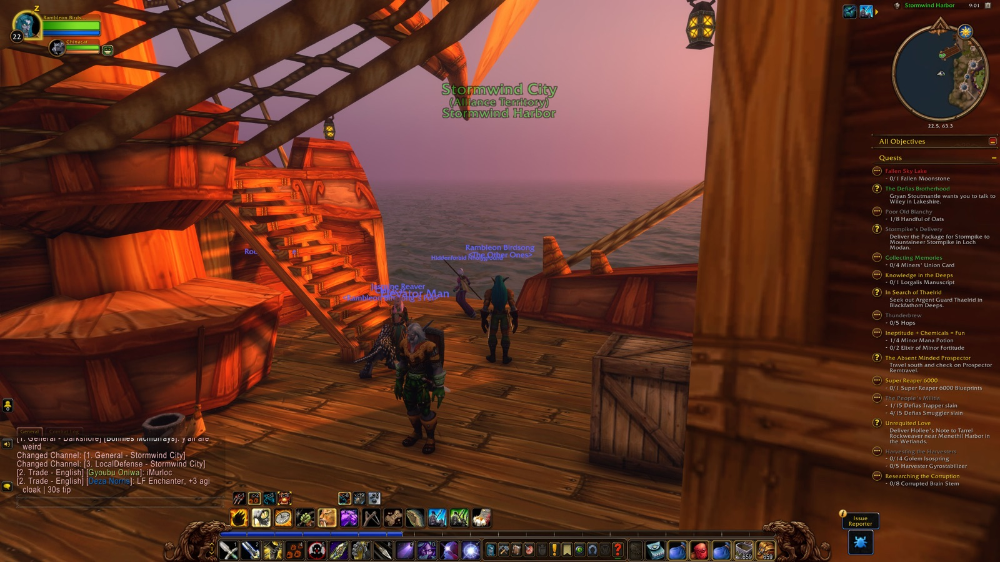
- Turned in
- Retrieval for Mauren (Mage Quarter, level 22)
- Loot worth keeping
- Spellcrafter Wand (Uncommon), Blackwater Cutlass (Rare)
44AshenvaleLevel 22
Fifty-four minutes through Astranaar, Raynewood Retreat, Nightsong Woods, Maestra's Post, and the Zoram Strand, by way of Darkshore. He picked up supplies for Auberdine and word of falls at Twilight. Wildthorn stalkers and dark strand assassins were familiar now, but Balizar the Umbrage, Caedakar the Vicious, twilight cultists, wrathtail raiders, a mystlash hydra, and a spined crawler were not. Cassidy walked it with him, and a picture marked the edge of Darkshore.
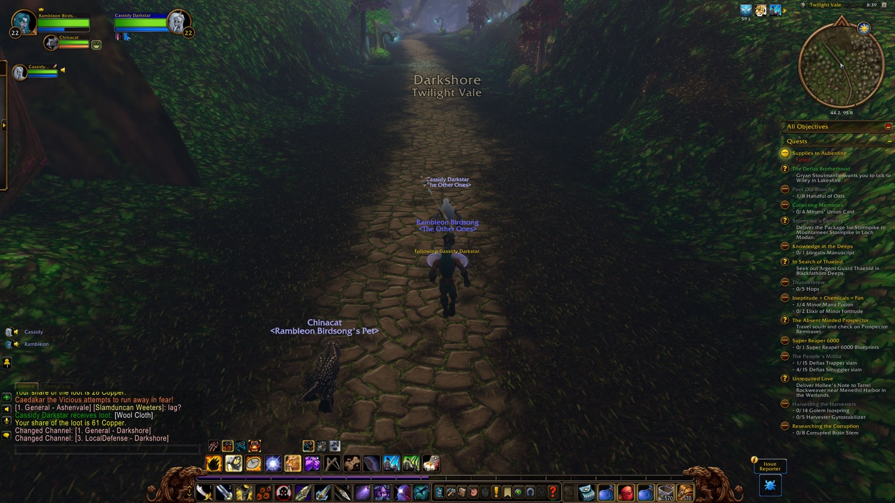
- Picked up
- Supplies to Auberdine, Twilight Falls
- First met in combat
- Wildthorn Stalker, Dark Strand Assassin, Forsaken Scout, Balizar the Umbrage, Caedakar the Vicious, Aligar the Tormentor, Twilight Thug, Twilight Disciple, Wrathtail Sorceress, Wrathtail Wave Rider, Mystlash Hydra, Spined Crawler
- Company
- Cassidy
45Blackfathom DeepsLevel 22
Thirty-eight minutes back in the drowned Sacellum, by way of Darkshore. Murkshallow snapclaws and blindlight murlocs met him again, and the depths claimed him once more. A picture marked his second descent.
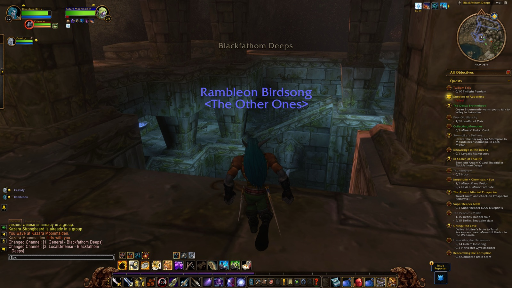
- First met in combat
- Murkshallow Snapclaw, Blindlight Murloc
- Deaths
- 1 (The Drowned Sacellum)
- Instances
- Blackfathom Deeps
46WetlandsLevel 22–23
Seven and a half hours through Baradin Bay, Menethil Harbor and Keep and Bay, the Black Channel and Bluegill marshes, the Deepwater Tavern, the Lost Fleet, Sundown Marsh, Angerfang Encampment, the Green Belt, and Direforge Hill, with Dun Morogh, Ironforge, Searing Gorge, Burning Steppes, and Elwynn glimpsed at the edges. He closed a long list at Menethil — crocolisk skins, an apprentice's duties, claws from the deep, statuettes returned, war banners, the third fleet, the greenwarden, crocs of the sky — and rose to twenty-three there. Young and giant wetlands crocolisks, mottled raptors, bluegill murlocs of several ranks, a dragonmaw raider, a fen creeper, and a skeleton cost him eight deaths at Angerfang and the Green Belt. Zogg, Cassidy, Natcho, Dazzs, Paladonald, Quad, Jaxsul, and Kalos shared the marsh with him, and he came away with a good haul of leather and cloth worth keeping. Pictures marked his entrance to the Wetlands, his new level, and a long trail of lands passed through after.
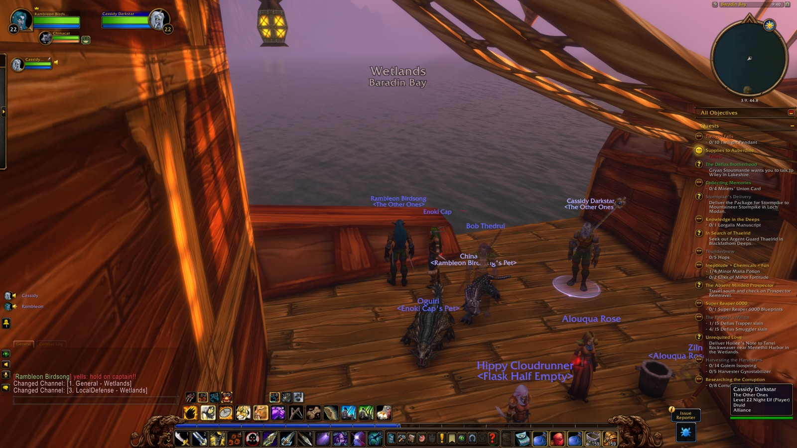
- Picked up
- Claws from the Deep, Young Crocolisk Skins, Bloom of the Heavens, The Third Fleet, The Greenwarden, Alchemical Hazards, Digging Through the Ooze, Spoils of War, In Search of the Excavation Team, Apprentice's Duties, Crocs of the Sky, Reclaiming Goods, War Banners, From the Ashes, The Search Continues, Search More Hovels, Return the Statuette ×2, Razormaw Needling, Trying Times, A Friend of the Family, Nek'rosh's Gambit, The Cursed Crew, Tramping Paws
- Turned in
- Unrequited Love (Menethil Harbor, level 22), Young Crocolisk Skins (Menethil Harbor, level 22), Apprentice's Duties (Menethil Harbor, level 22), Spoils of War (Menethil Keep, level 22), Claws from the Deep (Menethil Harbor, level 22), Reclaiming Goods (Bluegill Marsh, level 23), The Search Continues (Bluegill Marsh, level 23), Search More Hovels (Bluegill Marsh, level 23), Return the Statuette ×2 (Menethil Keep, level 23), War Banners (Menethil Keep, level 23), From the Ashes (Menethil Keep, level 23), The Third Fleet (Menethil Harbor, level 23), The Greenwarden (The Green Belt, level 23), Crocs of the Sky (Menethil Harbor, level 23)
- Reached
- level 23 (Menethil Harbor)
- First met in combat
- Young Wetlands Crocolisk, Wetlands Crocolisk, Giant Wetlands Crocolisk, Mottled Raptor, Bluegill Murloc, Gobbler, Fen Dweller, Bluegill Puddlejumper, Bluegill Warrior, Dragonmaw Raider, Fen Creeper, Skeleton
- Loot worth keeping
- Burnished Girdle (Uncommon), Malleable Chain Leggings (Uncommon), Scouting Cloak of the Monkey (Uncommon), Banded Cloak of the Boar (Uncommon), Icicle Rod (Uncommon), Smoldering Boots (Uncommon), Forest Leather Bracers (Uncommon), Bright Boots (Uncommon), Ridge Cleaver of Magic (Uncommon)
- Deaths
- 8 (Angerfang Encampment, The Green Belt)
- Company
- Zogg, Cassidy, Natcho, Dazzs, Paladonald, Quad, Jaxsul, Kalos
47Stormwind CityLevel 23
Seven minutes through the Valley of Heroes, Trade District, Canals, Old Town, the Keep, and the Cathedral, enough to close A Friend of the Family twice over at the Cathedral and come away with a royal dagger worth keeping. Cassidy was there, and a picture marked the entrance.
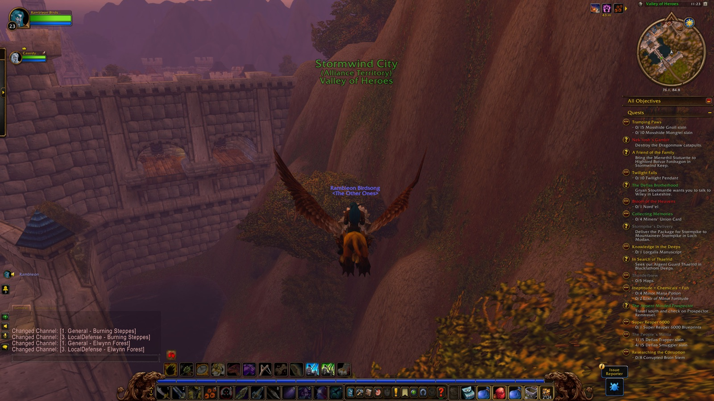
- Picked up
- A Friend of the Family, The Shamed Lieutenant
- Turned in
- A Friend of the Family ×2 (Cathedral of Light, level 23)
- Loot worth keeping
- Royal Dagger (Uncommon)
- Company
- Cassidy
48WetlandsLevel 23–25
Four and a half hours back through the Deepwater Tavern, Menethil Harbor and Bay, Bluegill Marsh, Sundown Marsh, Ironbeard's Tomb, Angerfang Encampment, the Green Belt, Whelgar's Excavation Site, the Black Channel, Mosshide Fen, Thelgen Rock, Baradin Bay, Direforge Hill, and Menethil Keep, by way of Dun Morogh, Ironforge, and the Lion's Pride Inn. He closed the excavation team's search, three turns of Ormer's Revenge, and the digging and alchemy of Menethil, rising to twenty-four in the marsh and twenty-five at Whelgar's dig. Mosshide fenrunners, black ooze, mottled raptors and their kin, a warder named Goaz, the brute Sarltooth, leech and cave stalkers, and mosshide mongrels cost him twelve deaths across Ironbeard's Tomb, Whelgar's dig, Thelgen Rock, and the marsh itself — the hardest reckoning of the whole record. Annastasia, Natcho, Gurney, Lanfair, Nawan, Uncle, Artemis, Cdna, Básdorcha, Adryh, Falcon, Big, Tzuyu, Fleche, and Stoneheart all stood with him through it, and he came away with a rare pair of gauntlets among a strong haul of gear. Pictures marked both his rises and the long road between them.
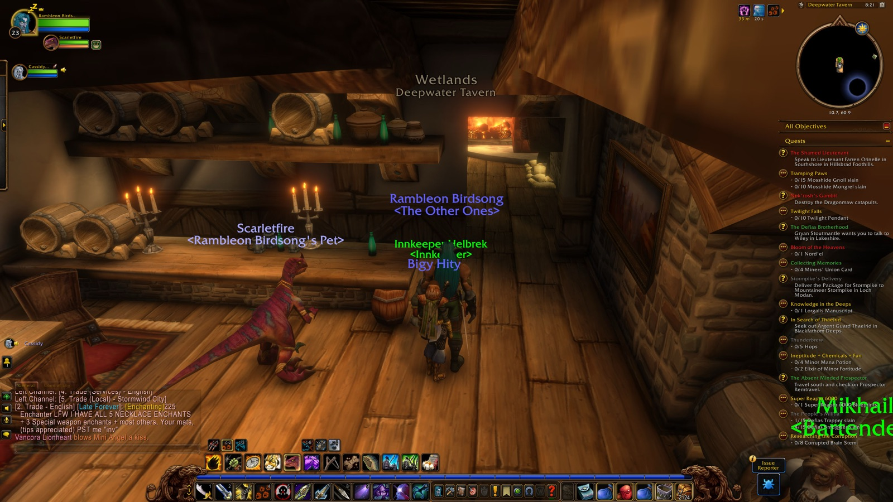
- Picked up
- Ormer's Revenge ×3, Uncovering the Past, In Search of the Excavation Team, Understanding Our Present, Gleaning Our Future, Lost in the Thicket Things, Highland Hides, Quell the Uprising, Essential Artificials, The Restless Dead, Fire Taboo, Fall of Dun Modr
- Turned in
- In Search of the Excavation Team ×2 (Menethil Harbor, level 24), Ormer's Revenge ×3 (Whelgar's Excavation Site, level 25), Uncovering the Past (Whelgar's Excavation Site, level 24), Understanding Our Present (Whelgar's Excavation Site, level 24), Digging Through the Ooze (Menethil Harbor, level 24), Alchemical Hazards (Menethil Harbor, level 24), Tramping Paws (The Green Belt, level 25)
- Reached
- level 24 (Wetlands), level 25 (Whelgar's Excavation Site)
- First met in combat
- Wetlands Crocolisk, Mosshide Fenrunner, Black Ooze, Mottled Raptor, Mottled Screecher, Mottled Scytheclaw, Mottled Razormaw, Goaz Warder, Sarltooth, Leech Stalker, Cave Stalker, Mosshide Mongrel
- Loot worth keeping
- Silk Mantle of Gamn (Uncommon), Excavation Cloak (Uncommon), Fortified Cloak of Shadow Wrath (Uncommon), Dark Leather Shoulders (Uncommon), Cavalier Two-hander of the Falcon (Uncommon), Raptor's End (Uncommon), Thorbia's Gauntlets (Rare)
- Deaths
- 12 (Ironbeard's Tomb, Whelgar's Excavation Site, Thelgen Rock, Wetlands)
- Company
- Annastasia, Natcho, Gurney, Lanfair, Nawan, Uncle, Artemis, Cdna, Básdorcha, Adryh, Falcon, Big, Tzuyu, Fleche, Stoneheart
49IronforgeLevel 25
Forty-three minutes through the Great Forge, the Hall of Explorers, Tinker Town, and the Military Ward, by way of Dun Morogh, the Wetlands, and the Lion's Pride Inn. He picked up a data rescue and word of a grand betrayal, and came away with gloves, a belt, a tunic, and leggings worth keeping.
- Picked up
- Data Rescue, The Grand Betrayal
- Loot worth keeping
- Barbaric Gloves (Uncommon), Scaled Leather Belt of the Falcon (Uncommon), Dervish Tunic of Arcane Wrath (Uncommon), Shadow Weaver Leggings (Uncommon)
50Hillsbrad FoothillsLevel 25
Five minutes along the Great Sea's strands to Southshore, enough to close the shamed lieutenant's business and pick up a lack of virtue, a coastal errand, and a brewer's trade. A picture marked his first steps into the foothills.
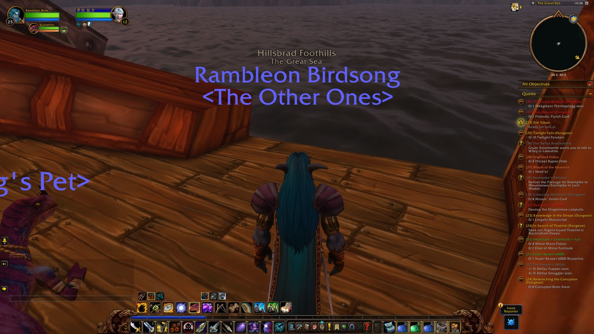
- Picked up
- A Lack of Virtue, Down the Coast, Brewer's Trade
- Turned in
- The Shamed Lieutenant (Southshore, level 25)
51WetlandsLevel 25
Nineteen minutes back through Baradin Bay to Menethil Harbor, by a long and roundabout road — the Lion's Pride Inn, Dustwallow Marsh, the Barrens, Mulgore, Shen'dralas, Desolace, Stonetalon, Ashenvale, Darkshore, and Teldrassil all glimpsed in passing. He closed A Lack of Virtue at the Harbor, and pictures marked nearly every land he crossed to get there.
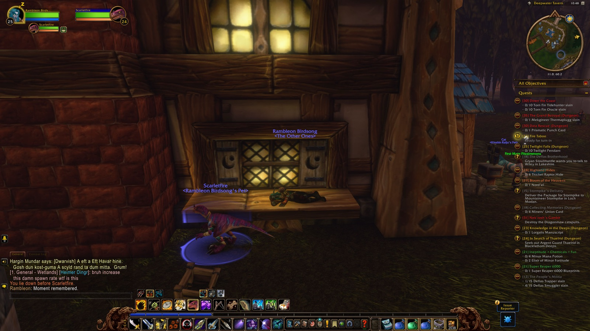
- Turned in
- A Lack of Virtue (Menethil Harbor, level 25)
52DarnassusLevel 25
Twenty-eight minutes through the Temple of the Moon, its gardens, the Tradesmen's and Warrior's and Craftsmen's Terraces, and the Cenarion Enclave, by way of Teldrassil, Darkshore, and Ashenvale. No business is recorded beyond the walking itself, but pictures marked his entrance to the city and quiet moments in the Temple and on the Veiled Sea.
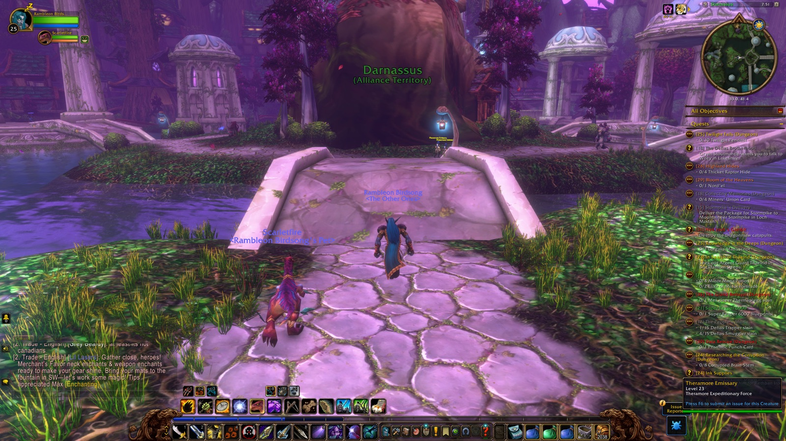
53Stonetalon MountainsLevel 25
An hour and fifty minutes among the peak, the lake, the Charred Vale, Webwinder Path, Sun Rock Retreat, and the Talon Den. He finally closed the reclaiming of the Charred Vale, a task that had sat open against him for some time, and wrote of it with real satisfaction: "leaving that charred vale quest open was bothering me... solo'd it complete." Antlered coursers, bloodfury of several kinds, charred ancients, and a roguefeather and storm witch among them cost him two deaths in the vale, but the quest was his at the end of it, alone.
- Picked up
- Reclaiming the Charred Vale
- Turned in
- Reclaiming the Charred Vale (Stonetalon Peak, level 25)
- First met in combat
- Antlered Courser, Bloodfury Harpy, Bloodfury Windcaller, Blackened Basilisk, Bloodfury Ambusher, Bloodfury Roguefeather, Charred Ancient, Bloodfury Slayer, Bloodfury Storm Witch
- Deaths
- 2 (The Charred Vale)
- “leaving that charred vale quest open was bothering me... solo'd it complete” (Chapter 18)
54AshenvaleLevel 25–26
Five hours through the Veiled Sea, the Zoram Strand, Lake Falathim, Maestra's Post, Astranaar, Raynewood Retreat, Nightsong Woods, the Shady Nook, a moonwell, the Falfarren River, Xavian, Night Run, Splintertree Post, Satyrnaar, Forest Song, the Dor'Danil Barrow Den, and Felfire Hill. He closed Raene's Cleansing at the moonwell, Kayneth Stillwind's errand and the vengeful trail at Forest Song, and a crescent necklace at Astranaar, rising there at last to level twenty-six. Wildthorn venomspitters, an elder ashenvale bear, withered ancients, a ghostpaw alpha, shadethicket furbolg, felmusk shadowstalkers, and bleakheart satyrs and their hellcaller cost him eight deaths across Nightsong Woods, Night Run, the Falfarren, Satyrnaar, and the Barrow Den. Mitzvah, Trogwar, and Jina shared the long haul with him, and he came away with a buckler and a replica necklace worth keeping. Of Astranaar itself, waiting for a drink that wasn't there, he wrote only: "no bars in astranaar." A picture marked his rise to twenty-six.
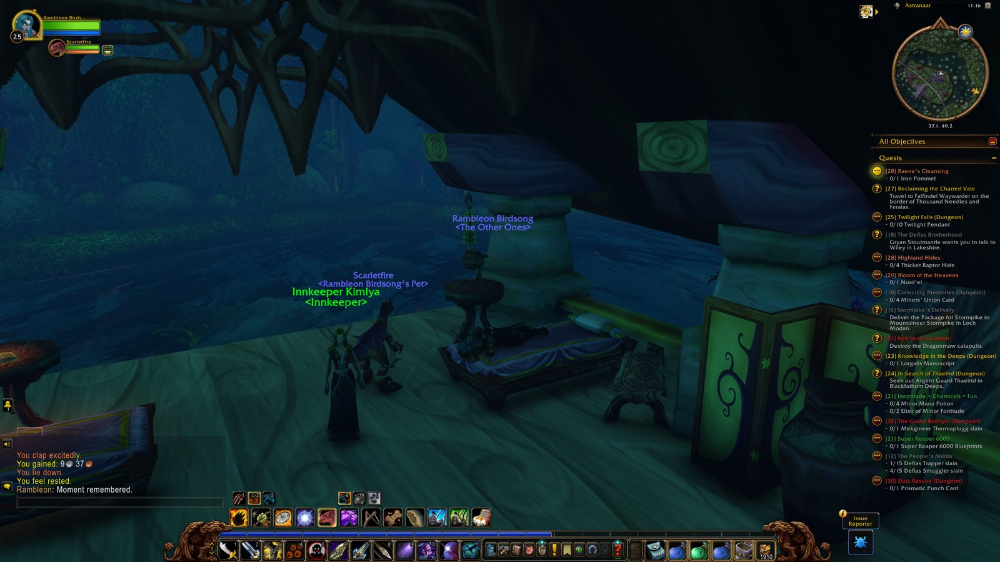
- Picked up
- Kayneth Stillwind, Raene's Cleansing ×2, Gleaming Crescent Necklace, Forsaken Diseases, Vengeful Trail, Shared Fury, The Tower of Althalaxx, Supplies to Auberdine
- Turned in
- Raene's Cleansing ×2 (Moonwell, level 25), Kayneth Stillwind (Forest Song, level 25), Vengeful Trail (Forest Song, level 25), Gleaming Crescent Necklace (Astranaar, level 26), The Tower of Althalaxx (Maestra's Post, level 26)
- Reached
- level 26 (Astranaar)
- First met in combat
- Wildthorn Venomspitter, Elder Ashenvale Bear, Withered Ancient, Ghostpaw Alpha, Crazed Ancient, Shadethicket Stone Mover, Shadethicket Bark Ripper, Felmusk Shadowstalker, Bleakheart Trickster, Wildthorn Lurker, Bleakheart Satyr, Bleakheart Hellcaller
- Loot worth keeping
- Bristlebark Buckler (Uncommon), Replica Crescent Necklace (Uncommon)
- Deaths
- 8 (Nightsong Woods, Night Run, Falfarren River, Satyrnaar, The Dor'Danil Barrow Den)
- Company
- Mitzvah, Trogwar, Jina
- “no bars in astranaar” (Chapter 18)
55DarkshoreLevel 26
Two hours and forty minutes, the record's last and still unfinished, through Twilight Vale and Shore, the Long Wash, Auberdine, the Cliffspring, and the Tower of Althalaxx, where he closed the Tower's business once more and died once at its foot. A picture marked his return to the familiar shore — the night, as the journal leaves it, still going.
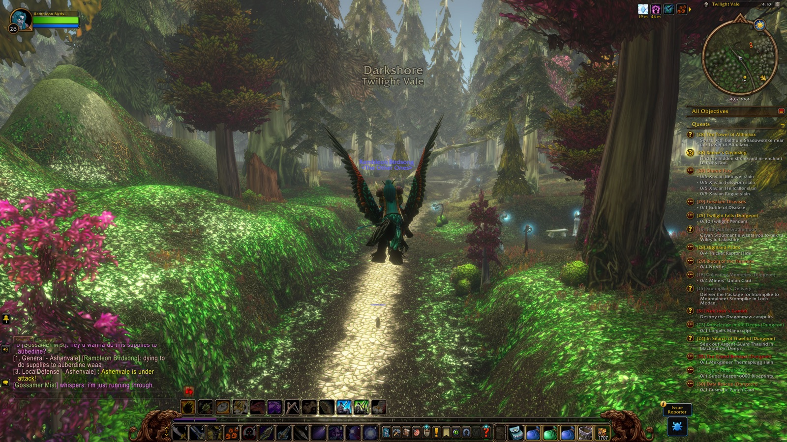
- Picked up
- The Tower of Althalaxx
- Turned in
- The Tower of Althalaxx (level 26)
- Deaths
- 1 (Tower of Althalaxx)